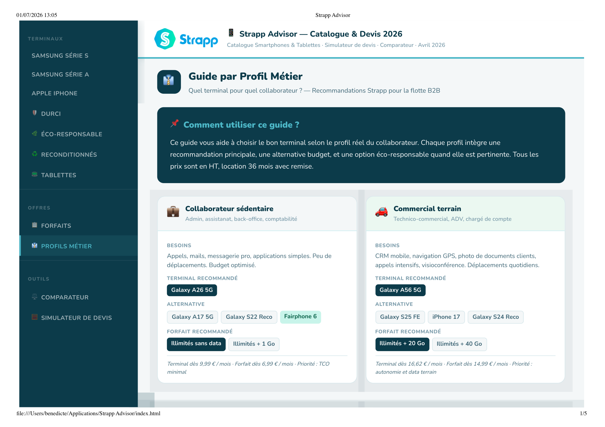
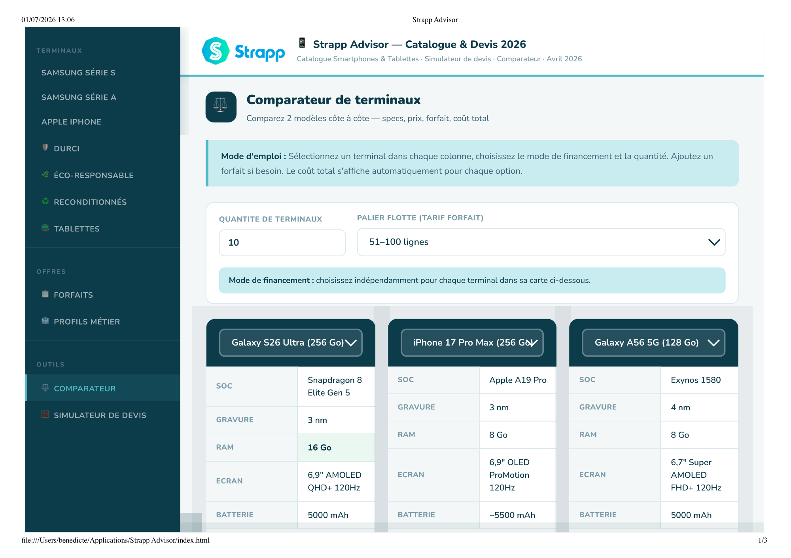
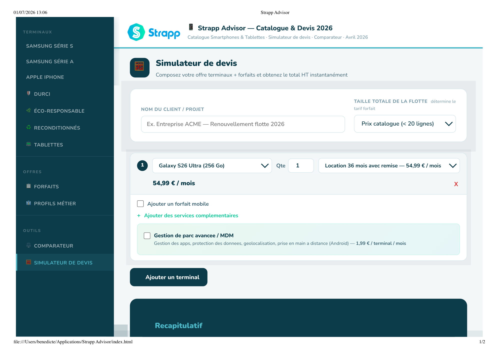
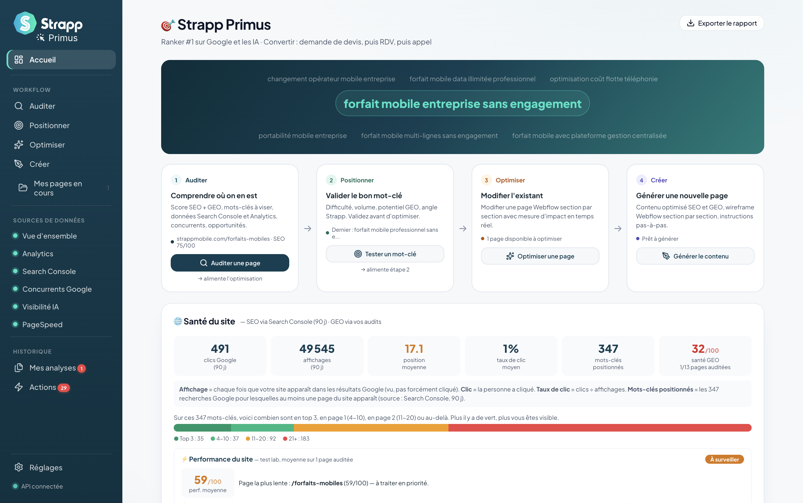
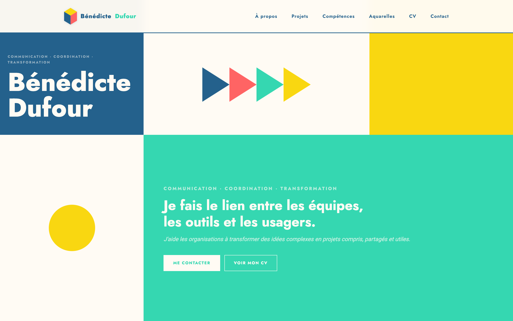
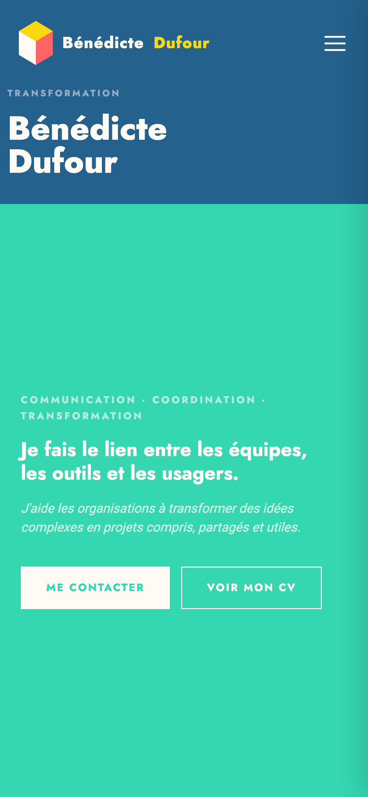

Outils métiers · IA & développement
Trois outils fonctionnels conçus et déployés en autonomie, avec Claude et Claude Code · chacun est né d'un vrai problème terrain, sans budget développeur et sans délai d'attente.
Outil 01
Strapp Advisor
Claude · HTML / CSS / JS
Le problème
Avant chaque rendez-vous prospect, les commerciaux cherchaient les informations dans des fichiers éparpillés : grilles tarifaires, scripts d'objection, fiches produit, cas clients. Chaque RDV commençait par 20 minutes de recherche.
Une interface centralisée · tout accessible en un clic avant le RDV · adoptée par l'équipe commerciale.

Guide par Profil Métier

Comparateur de terminaux

Simulateur de devis
Outil 02
Strapp Primus
Claude Code · Node.js · Express · localhost
Le problème
Optimiser strappmobile.com exige d'analyser en continu les positions Google, les signaux de conversion, la citabilité par les IA (GEO) et la cohérence sémantique — sans outil du marché ne les réunissant tous.
Plateforme locale SEO + GEO + conversion · 9 sources de données connectées : Search Console, GA4, PageSpeed, API Claude avec recherche web, autocomplete Google, Google Trends, crawl du site, analyse sémantique, concurrents · données dérivées : maillage interne, cannibalisation, cluster de pages · logo sur mesure · usage hebdomadaire.

Dashboard · vue d'ensemble des pages, scores et priorités d'action
Outil 03
Ce portfolio
Claude Code · HTML / CSS / JS · GitHub Pages
Le problème
Créer un portfolio professionnel, animé et responsive sans passer par un template ou un développeur · partir d'une intention créative et arriver à un site live, sans délai ni compromis sur le design.
Site conçu et déployé en autonomie complète · hébergé sur GitHub Pages · vous l'avez devant les yeux.

Vue desktop · 1440px

Vue mobile · 390px
Approche
Dans chaque cas, la démarche est la même : identifier précisément le problème terrain, cadrer ce que l'outil doit faire (et ne pas faire), puis construire itérativement avec Claude ou Claude Code. Aucun de ces outils n'a nécessité de mobiliser un développeur.
Ce n'est pas une compétence technique au sens strict · c'est une méthode de résolution de problèmes : comprendre, cadrer, construire, tester, ajuster. La même qu'en communication.
En chiffres
Outils en production
3 outils
déployés et utilisés au quotidien
Développeurs mobilisés
0
conception et déploiement en autonomie complète
Outils utilisés
Claude · Claude Code
Apps Script · GitHub Pages · Python
D'autres projets à explorer
Communication, stratégie, UX et direction artistique.